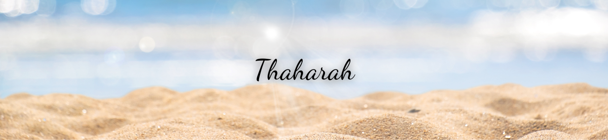

.png)
Thaharah: Cara Bersuci dari Najis dan Hadas

Dalam kitab Safinatun Najah, bersuci bisa melalui 4 cara yaitu istinja, berwudhu, tayamum, dan mandi janabah.
ISTINJA
Istinja adalah membersihkan sesuatu yang keluar dari kemaluan, kubul ataupun dubur, menggunakan air atau batu yang terikat beberapa syarat tertentu.
(فصل) شروط إجزاء الحَجَرْ ثمانية: أن يكون بثلاثة أحجار ، وأن ينقي المحل ، وأن لا يجف النجس ، ولا ينتقل ، ولا يطرأ عليه آخر ، ولا يجاوز صفحته وحشفته ، ولا يصيبه ماء ، وأن تكون الأحجار طاهرة.
Syarat boleh menggunakan batu untuk beristinja ada delapan, yaitu:
1. Menggunakan tiga batu.
2. Mensucikan tempat keluar najis dengan batu tersebut.
3. Najis tersebut tidak kering.
4. Najis tersebut tidak berpindah.
5. Tempat istinja tersebut tidak terkena benda yang lain sekalipun tidak najis.
6. Najis tersebut tidak berpindah tempat istinja (lubang kemaluan belakang dan kepala kemaluan depan).
7. Najis tersebut tidak terkena air.
8. Batu tersebut suci.
NAJIS
Secara bahasa Wudhu berasal dari kata wudho-a yang artinya adalah bersih, baik, atau murni. Secara fiqih wudhu diartikan sebagai salah satu cara menyucikan anggota tubuh dengan air.
فروض الوضوء ستة: الأول:النية ، الثاني : غسل الوجه ، الثالث: غسل اليدين مع المرفقين ، الرابع : مسح شيء من الرأس ، الخامس : غسل الرجلين مع الكعبين ، السادس :الترتيب .
Rukun wudhu ada enam, yaitu:
1. Niat.
2. Membasuh muka
3. Membasuh kedua tangan serta siku.
4. Menyapu sebagian kepala.
5. Membasuh kedua kaki serta buku lali.
6. Tertib.
Adapun syarat-syarat wudhu ada 10, yaitu :
1. Islam
2. Tamyiz
3. Suci dari haid dan nifas
4. Lepas dari segala hal dan sesuatu yang bisa menghalangi air sampai ke kulit
5. Tidak ada sesuatu disalah satu anggota wudhu yang merubah keaslian air
6. Mengetahui bahwa wudhu itu wajib
7. Tidak boleh ber'itiqad bahwa salah satu dari fardhu-fardhu wudhu' hukumnya sunnah
8. Memastikan kesucian air wudhu tersebut
9. Masuk waktu sholat yang dikerjakan
10. Muwalat (berulang-ulang bagi orang yang langgeng hadats)
TAYAMUM
Tayamum adalah Mengusapkan tanah atau debu ke muka dan kedua tangan sampai siku dengan beberapa syarat yang telah ditentukan sebagai pengganti wudhu dan mandi.
أسباب التيمم ثلاثة: فقد الماء ، والمرض ، والاحتياج إليه لعطش حيوان محترم .
غير المحترم ستة : تارك الصلاة والزاني المحصن والمرتد والكافر الحربي والكلب العقور والخنزير
Sebab-Sebab yang membolehkan tayammum ada tiga hal, yaitu:
1. Tidak ada air untuk berwudhu`.
2. Ada penyakit yang mengakibatkan tidak boleh memakai air.
3. Ada air hanya sekedar mencukupi kebutuhan minum manusia atau binatang yang Muhtaram (dihormati).
Syarat-Syarat mengerjakan tayammum ada sepuluh, yaitu:
1. Bertayammum dengan tanah.
2. Menggunakan tanah yang suci tidak terkena najis.
3. Tidak pernah di pakai sebelumnya (untuk tayammaum yang fardhu).
4. Murni dari campuran yang lain seperti tepung dan seumpamanya.
5. Mengqoshod atau menghendaki (berniat) bahwa sapuan dengan tanah tersebut untuk di jadikan tayammum.
6. Masuk waktu shalat fardhu tersebut, sebelum tayammum.
7. Bertayammum tiap kali sholat fardhu tiba.
8. Berhati-hati dan bersungguh-sungguh dalam mencari arah qiblat sebelum memulai tayammum.
9. Menyapu muka dan dua tangannya dengan dua kali mengusap tanah tayammum secara masing-masing (terpisah).
10. Menghilangkan segala najis di badan terlebih dahulu.
Rukun-rukun tayammum ada lima, yaitu:
1. Memindah debu.
2. Niat.
3. Mengusap wajah.
4. Mengusap kedua belah tangan sampai siku.
5. Tertib antara dua usapan.
MANDI JANABAH (MANDI WAJIB)
Mandi janabah (dikenal pula dengan mandi junub atau mandi besar) adalah salah satu bagian dari bersuci (thaharah) dalam Islam. Jika seseorang yang sudah baligh dalam keadaan memiliki hadas besar, maka dia wajib mandi junub. Konsekuensinya, sebelum mandi tersebut dilakukan maka shalatnya tidak akan diterima.
Yang mewajibkan mandi ada enam perkara, yaitu:
1. Memasukkan kemaluan (kepala dzakar) ke dalam farji (kemaluan) perempuan.
2. Keluar air mani.
3. Wafat.
4. Keluar darah haidh [datang bulan].
5. Keluar darah nifas [darah yang keluar setelah melahirkan].
6. Melahirkan.
Rukun Mandi Janabah ada dua perkara, yaitu:
1. Niat mandi wajib.
2. Menyampaikan air ke seluruh tubuh dengan sempurna.